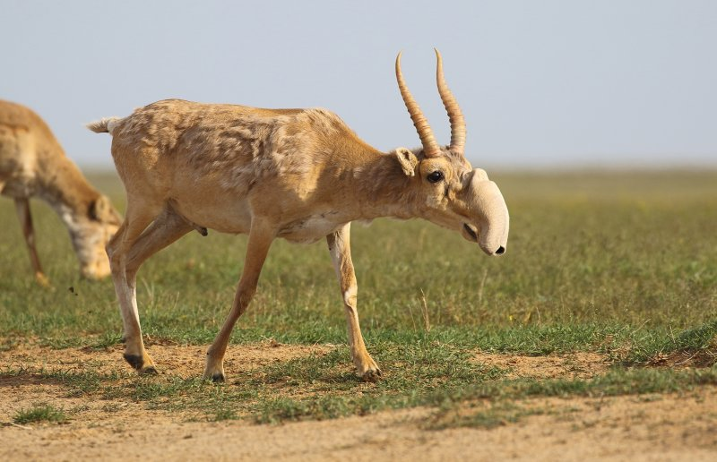

Асканія-Нова
Біосферний заповідник «Асканія-Нова» ім. Фальц-Фейна — науково-дослідна установа в системі Національної академії аграрних наук України, державний заповідник, заснований 1898 року Фрідріхом Фальц-Фейном.
Назву місцевості дав один з її попередніх власників — герцог Фрідріх Фердинанд Ангальт-Кетен-Плесський у 1841 році на честь власного маєтку Асканії в Німеччині. Звідти — «Асканія-Нова».
Асканія-Нова є унікальним не лише для України, а й для всього світу. Це найбільший степовий заповідник Європи, який щороку відвідує близько 140 тисяч туристів.
